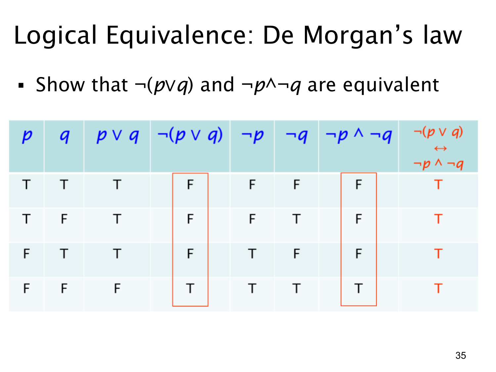

L1.1 · 第 35 页讲解原文
查看这一页课件

德摩根律：否定“或”得到“两个都不”
课件要证明一条逻辑等价：
¬(p∨q)≡¬p∧¬q.
左边说“p 或 q 并不成立”；右边说“p 不成立，而且 q 也不成立”。因为 p∨q 只在两者都假时为假，所以否定它以后，也只在两者都假时为真。
| p | q | ¬(p∨q) | ¬p∧¬q |
|---|---|---|---|
| T | T | F | F |
| T | F | F | F |
| F | T | F | F |
| F | F | T | T |
两列结果都是 F、F、F、T，每一行相同，因此两个表达式逻辑等价。课件最右列的双条件 ¬(p∨q)↔(¬p∧¬q) 也因此每一行都是 T，即永真式。
例如 p 为“今天下雨”，q 为“今天下雪”。“今天没有下雨或下雪”若表示否定整个“下雨或下雪”，就要求既不下雨，也不下雪。常见错误是只写 ¬p∨¬q；那在“下雨但不下雪”时已经为真，不能表达“两个都没有”。